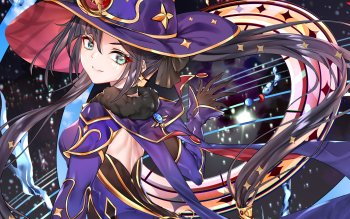

<ion-header>
  <ion-toolbar>
    <ion-buttons slot="start">
      <ion-back-button></ion-back-button>
    </ion-buttons>
    <ion-title><b>Character</b></ion-title>
  </ion-toolbar>
</ion-header>

<ion-content [fullscreen]="true">
  <ion-header collapse="condense">
    <ion-toolbar>
      <ion-title size="large">Character</ion-title>
    </ion-toolbar>
  </ion-header>

<ion-card color="secondary">
  
  <ion-card-header>
    <ion-card-title><b>Mona</b></ion-card-title>
  </ion-card-header>
  <ion-card-content>
    Mona, as a Hydro Catalyst, can easily apply Wet status to enemies.
    She excels at damaging enemies with Hydro + any element. When using Mona, it is ideal to use her as an Elemental Reaction-DPS or Support.
  </ion-card-content>
  <video
  width="100%"
  controls="controls"
  preload="metadata"
  autoplay="autoplay"
  webkit-playsinline="webkit-playsinline"
  class="videoPlayer">
  <source src="assets/mona.mp4" type="video/mp4" />
  </video>
</ion-card>